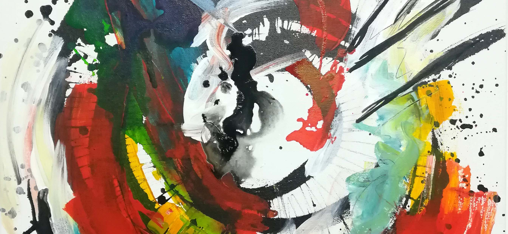
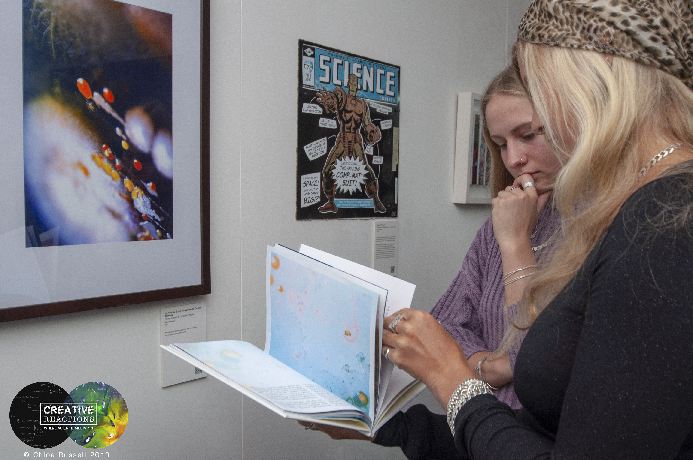
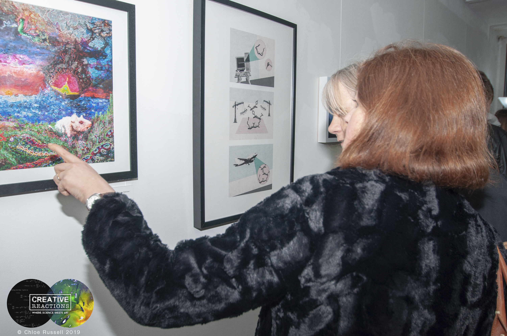
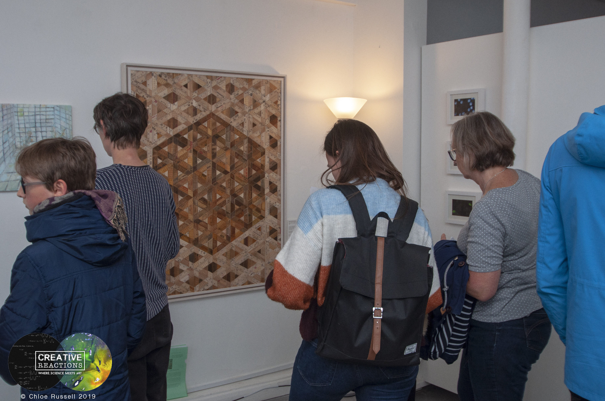

No Sidebar
Creative Reactions Bristol (CR) is a public engagement and outreach project that aims to engage diverse audiences with University research through art. We pair artists and reserachers together from a multitude of backgrounds and disciplines and enable them to work together to produce art works that respond and communicate the research. These collaborations culminate in an exhibition with a series of events to draw in differnet audiences.
I've been involved with CR since 2017 and have led on the project for two years. Since 2017 CR has worked with over 100 artists and 100 reserachers from Bristol and as far away as Italy. We've engaged ~5,000 members of the public through the exhibitions and events.

By working with artists researchers are able to approach their reserach and the way they comunicate their work in exciting and new lights. This provides them with a training opportunity but also means that their work can get out to diverse audiences that would otherwise not be aware of it. For artists the project provides a unique opportunity to broaden their practice and gain insights into areas of research that can be both personal and novel. It also provides a unique perspectvie onto what can be sometimes challenging concepts, with researhcers acting as the gateway to new areas of artistic interest.

There is a perception among many reserahcers that their work is way too complex to be turned into art. CR shows this isn't the case. Artists are not only able to explore the research and the people conducting it but are able to find unique ways of communicating what means most to them about the research to audiences. This allows audiences to really see behind complexities of research and see the underlying beauty of it.

